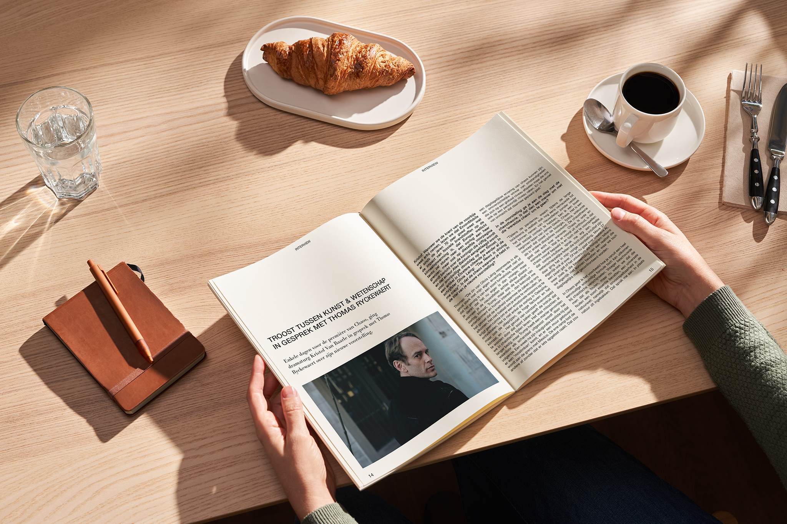
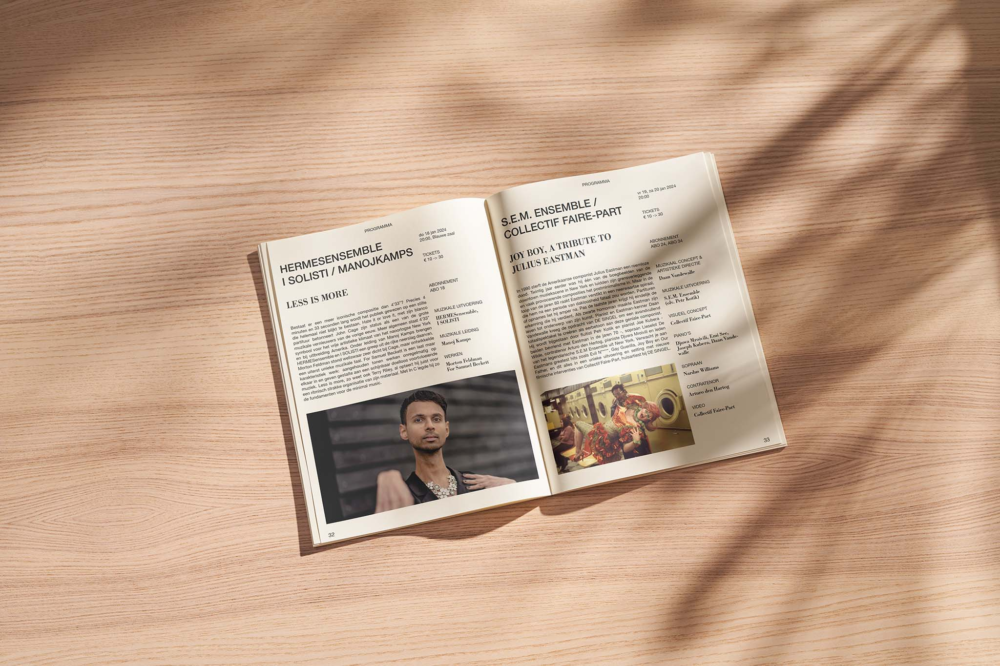
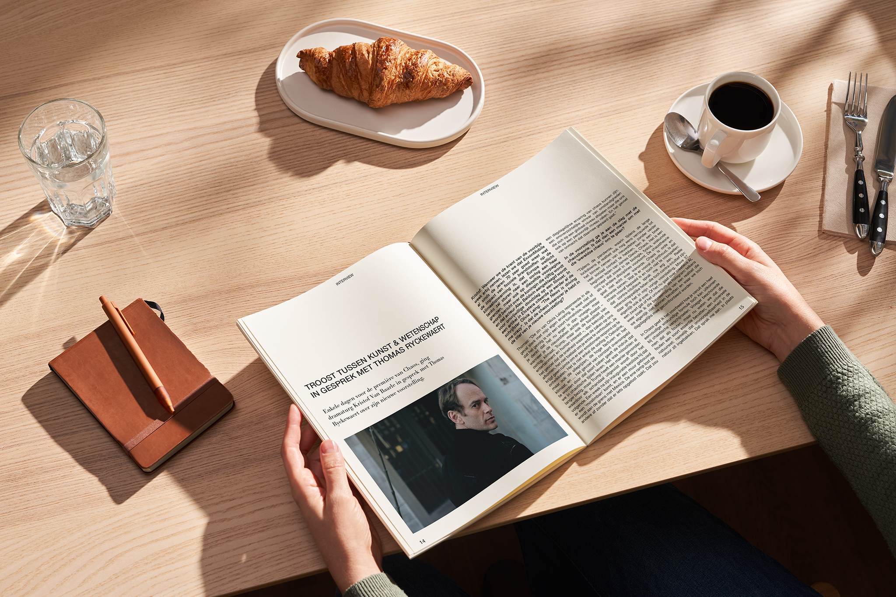
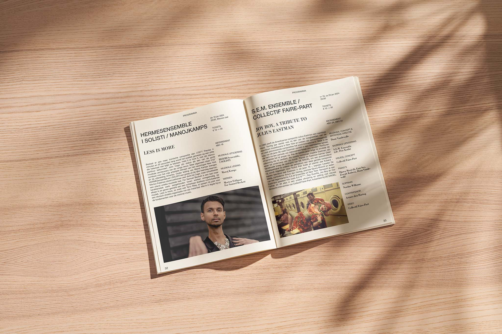

Brochure design
DeSingel
Voor de seizoensbrochure van DeSingel creëerde ik een strak ontwerp met duidelijke typografie en een overzichtelijke lay-out. Door witruimte en subtiele accenten blijft de focus op de inhoud, met een professionele en uitnodigende uitstraling als resultaat.
 


